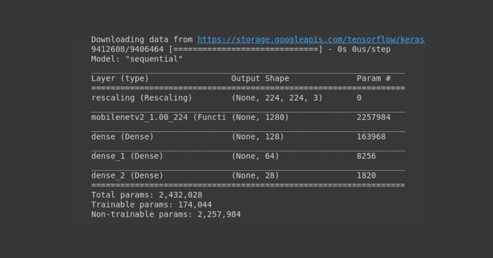

Interpreting The Results
The Interpretive Journey
Venturing into the realm of interpretation, HandLexa employs a sophisticated algorithmic framework to distill the raw outputs of its TensorFlow CNN into coherent linguistic representations. This interpretive odyssey begins with the dynamic analysis of detected letter sequences, a delicate dance between temporal continuity and model confidence.
Precision in Interpretation
Through meticulous calibration of thresholds for letter repetition, HandLexa navigates the ebb and flow of sign language dynamics with precision, transcending the boundaries of mere classification. As the algorithm evolves, informed by the crucible of real-world experimentation across diverse sign language lexicons, it attains a refined understanding of linguistic nuances, shaping each interpretation with contextual finesse.
The Challenge of Sign Language Interpretation
Sign language interpretation represents a unique challenge in the field of artificial intelligence, requiring algorithms to not only recognize visual patterns but also to infer semantic meaning from these patterns. HandLexa rises to this challenge by deploying a sophisticated algorithmic framework that bridges the gap between visual inputs and linguistic outputs.
Dynamic Analysis
Central to HandLexa's interpretive framework is the dynamic analysis of detected letter sequences. As sign language gestures unfold over time, HandLexa's algorithm carefully tracks the temporal continuity of these gestures, piecing together coherent sequences of letters that correspond to individual signs. This dynamic approach allows HandLexa to capture the fluidity and expressiveness inherent in sign language, transcending the limitations of static image analysis.
Pattern Recognition and Beyond
However, the mere identification of letter sequences is only the beginning of HandLexa's interpretive journey. To truly understand the meaning behind these sequences, HandLexa must delve deeper, calibrating thresholds for letter repetition to discern patterns of linguistic significance. By analyzing the frequency and context of repeated letters, HandLexa infers the grammatical structure of sign language utterances, uncovering the underlying syntax that governs communication.
Adaptability and Linguistic Fidelity
Yet, HandLexa's interpretive prowess extends beyond mere pattern recognition; it encompasses a nuanced understanding of linguistic nuances and cultural context. Through extensive real-world experimentation across diverse sign language lexicons, HandLexa refines its algorithmic models, honing its ability to interpret gestures with contextual finesse.
Driven by Fidelity
This iterative process of experimentation and refinement allows HandLexa to adapt to the intricacies of different sign languages, accommodating variations in vocabulary, grammar, and cultural conventions. Whether interpreting American Sign Language, British Sign Language, or any other regional variant, HandLexa remains steadfast in its commitment to linguistic fidelity, ensuring that each translation reflects the authentic expression of the signer.
Empowering Communication
At its core, HandLexa's interpretive framework is driven by a dedication to fidelity—the faithful representation of meaning across linguistic and cultural boundaries. By prioritizing accuracy and clarity in its interpretations, HandLexa empowers individuals with hearing impairments to engage fully in the rich tapestry of human communication.
Orchestrating a Symphony of Interpretation
Moreover, HandLexa's algorithmic virtuosity extends beyond mere accuracy; it encompasses adaptability and responsiveness to the dynamic nature of sign language communication. As signers express themselves with gestures that are fluid and expressive, HandLexa's algorithm evolves in real-time, adjusting its interpretations to capture the nuances of each unique interaction.
Harmonizing Accuracy, Adaptability, and Fidelity
In the symphony of sign language interpretation, HandLexa's algorithmic virtuosity orchestrates a harmonious fusion of accuracy, adaptability, and linguistic fidelity. By leveraging cutting-edge technology and a deep understanding of sign language dynamics, HandLexa transforms the landscape of communication, opening doors to connection and understanding for all.